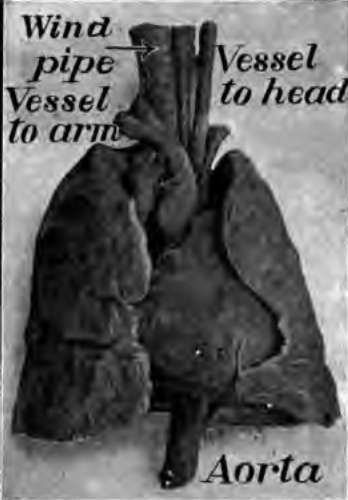
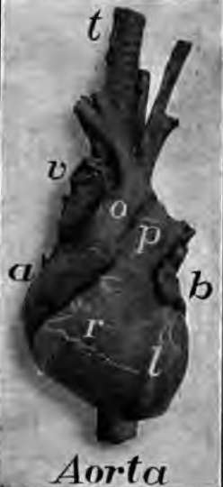
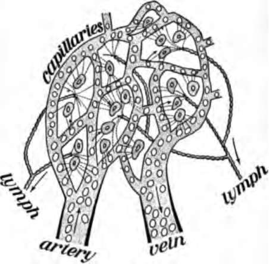
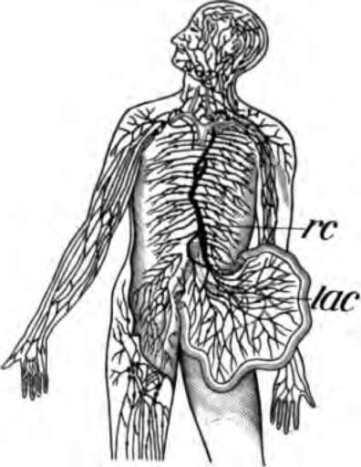

The Blood And Its Passage Through The Body. Part 2
Description
This section is from the book "The Human Body And Health", by Alvin Davison. Also available from Amazon: The Human Body and Health.
The Blood And Its Passage Through The Body. Part 2
Alcohol Injures The Red Blood Corpuscles
So far as known, a small quantity of wine or whisky has no effect on the red blood corpuscles. The large amount of alcohol in liquor, often taken by steady drinkers, badly damages these corpuscles. This has been shown by the experiments of a German scientist in 1904. In some cases, when much whisky is used daily, many corpuscles are entirely destroyed, and the person becomes sick because of poor blood.
Alcohol Makes The White Corpuscles Weak
The germs of disease often get into the body with food and drink, or when the skin is cut and bruised. They are generally prevented from harming the body by the white blood corpuscles, which devour them. Late experiments in France have shown that these corpuscles are much weakened when persons use alcoholic drink.
Rabbits into which anthrax germs are put, do not take the disease until they are fed alcohol. Tuberculosis often attacks drinkers when their white blood corpuscles have become weakened by the use of alcohol. A noted French scientist has lately said that nearly one half the deaths from tuberculosis are due to alcohol.
Fig. 53. The heart between the lungs. From a photograph.
Fig. 54. The heart from in front, a, right auricle; b, left auricle; r, right ventricle; l, left ventricle; p, artery to the lungs; O, aorta; v, vena cava. From a photograph.
The Heart
The heart is about as large as one's fist, and lies between the lungs in the chest cavity. It has the shape of a strawberry. Its walls are made of muscle, and the cavity within is divided into four parts. The two upper chambers with thin walls are the auricles. The two lower chambers with thick walls are the ventricles.
The auricles receive the blood from the veins, and pass it to the ventricles, through two openings guarded by valves (Fig. 60). These prevent the blood from flowing backward. Each ventricle by squeezing its walls together forces theblood out into an artery.
The Arteries
These are the vessels bearing the blood away from the heart. Their walls are made largely of muscle and other elastic tissue. The lung artery carries the blood from the right ventricle to the lungs, in which it branches like the limbs of a tree. This branching allows the blood to come in close contact with the air in the richly branching air tubes of the lungs. In this way the blood gets its oxygen from the air.
The main artery through the trunk of the body is the aorta receiving the blood from the left ventricle. The aorta gives off more than a score of branches to the head, arms, ribs, digestive organs, and legs. Each of these branches divides again and again like the limbs of a tree, until they become smaller than hairs. At the end of these hairlike branches is a network of still finer tubes, called capillaries. These join the arteries with the veins (Fig. 52).
The Veins
The veins beginning in little branchlets receiving the blood from the capillaries, unite into larger and larger vessels until there are but two chief veins in the trunk of the body. One of these great veins, as large as the thumb, receives the blood from the head and arms and empties it into the right auricle of the heart. The other vessel, lying just in front of the backbone, receives the blood from the legs and digestive organs, and carries it also into the right auricle.
The blood is brought to the left auricle from the lungs by several lung veins. This is called arterial blood, because it has just received oxygen from the air in the lungs, and cast off its carbon dioxide. All other veins carry venous blood, which is rich in carbon dioxide, but contains little oxygen. All arteries, except the lung artery, carry arterial blood, which is rich in oxygen.
The Capillaries
The capillaries form the network of tiny tubes joining the ends of the arteries with the beginning of the veins. They are so abundant everywhere in the flesh, that a pin cannot enter it without piercing one. Their wall is thinner than the thinnest tissue paper, so that the food in the blood can pass through to feed the cells of the body.
The oxygen also passes out of the blood through the walls of the capillaries to supply the tissues, and at the same time carbon dioxide and other waste enter the blood.
Some of the blood plasma and white corpuscles pass out of the capillaries and are not able to return to them. They are taken up by another set of tubes called lymph vessels (Fig. 57).
Fig. 55. Blood plasma passing out of the capillaries to feed the cells. It is there taken up by the lymph vessel.
Fig. 56. The lymph vessels of the body, rc, the thoracic duct; lac, the lacteals taking the lymph and fatty part of food from the intestines.
The Lymph Vessels Or Lymphatics
These are numerous small tubes, beginning with mouths opening into the many spaces among the muscles and just under the skin. The tubes unite into larger and larger vessels until there are but two main ones. These lead into the veins in the neck. The largest lymph vessel is the left thoracic duct. This is about the size of a lead pencil and lies in front of the backbone. That part of the blood escaping from the capillaries together with some waste matter from the cells of the body, forms the lymph conveyed by the lymph vessels.
Continue to:
- prev: Chapter IX. The Blood And Its Passage Through The Body
- Table of Contents
- next: The Blood And Its Passage Through The Body. Part 3